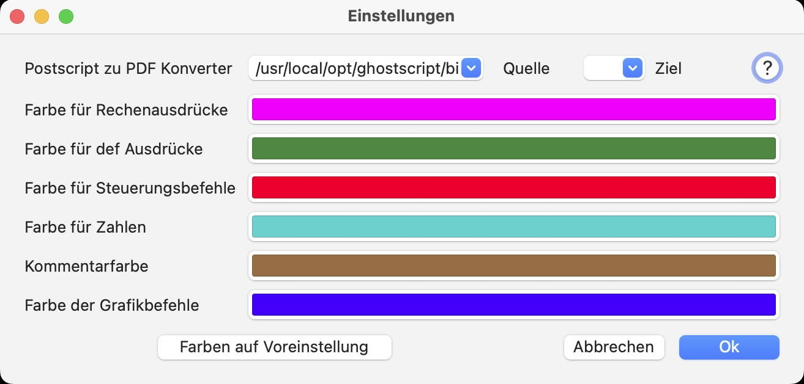

Mindestvoraussetzung zum Ausführen der Anwendung ist Ventura (macOs 13.0). Leider haben sich die Voraussetzungen für Sonoma (macOs 14.0) geändert!
Die Anwendung enthält nicht den Postscript-Interpreter selbst, sondern nutzt ein Tool, das Postscript-Dateien in PDF konvertiert. Es gibt 3 Möglichkeiten, dies zu tun: (Die Sandbox erlaubt es nicht mehr, das Tool auszuführen und stürzt mit „launch path not accessible“ ab).
Wenn Sie Xcode installiert haben, ist es am einfachsten, einen geeigneten Postscript-Konverter zu installieren, indem Sie auch die Xcode-Tools installieren. Die Tools können von der Apple-Entwicklerseite heruntergeladen werden unter: Command line tools. .
Klicken Sie auf die Zeile Command line tools and old versions of Xcode im Abschnitt Additional downloads.
Sehr oft wird die Installation der Kommandozeilentools von Xcode angefordert und Sie müssen sie nicht manuell durchführen. Remark: The tool will be installed under: /usr/bin/pstopdf, falls Sie direkt darauf zugreifen möchten.
P.S. Es sieht so aus, als ob die neuesten XCode Befehlszeilen-Tools das pstopdf-Tool nicht mehr enthalten, aber wenn es vorher installiert war bleibt es möglicherweise erhalten. Vielleicht können Sie das Kommandozeilentool für Xcode 13 auch nachträglich installieren.
Bitte befolgen Sie den Installationsprozess, der auf der Seite Mac Ports beschrieben ist.
Sie müssen in der sudoers Liste stehen und müssen
> sudo port install ghostscript
auf der Kommandozeile ausführen.
Unter Homebrew Formulae finden Sie den Befehl, wie Sie Ghostscript mit brew installieren können. Ähnlich wie oben führen Sie aus:
> brew install ghostscript.
Es ist absolut ausreichend, einen von ihnen installiert zu haben. Falls beim ersten Start der Anwendung zwei oder mehr Postscript-Konverter gefunden wurden, wird das Einstellungsfenster angezeigt, um einen von ihnen auszuwählen.
Brew und MacPorts installieren den Konverter unter demselben Pfad (/usr/local/bin/ps2pdf, auch unter Sonoma geändert). Wenn Sie also weder an der MacPorts- noch an der Brew-Installation etwas geändert haben, wird die zuletzt installierte Version die vorherige überschreiben. Bemerkung: Brew hat früher /usr/local/opt/ps2pdf als Installationspfad verwendet.
Das Programm wurde gegenüber der ursprünglichen Version dahingehend geändert, dass die Eingabe des Konverterpfades auch dann möglich ist, wenn kein Konverter an den typischen Stellen gefunden wurde. Dies ist nützlich, wenn Sie den Konverter an einem anderen Ort installiert haben.